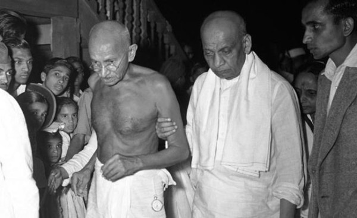

Sardar Vallabhbhai Patel
The Iron Man Of India

Sardar Patel Was one of the famous Indian freedom fighters. He was the prominent leader of Indian National Congress and found the father of the Republic of India. His efforts made India united, so the People called him ‘Iron man of India’.
Sardar Patel, The Father Of Republic Of India
- Sardar Patel Early days: - Sardar Patel was born on Oct 31, 1875, in a farmer’s family in Nadiad, Gujarat. His father was Zaverbhai, had served in the army of Jhansi Ki Rani. His mother Ladbai, the deeply religious woman. Since his childhood days, he had superior organizational skills. As a profession, he was a Lawyer, advocate in many local complicated cases and exposed his skills in overthrow the accuses of the opponent lawers. Once he was in high school at Petlad, he coordinates the entire campaign for a poor teacher who he thought deserved a seat on the local municipal committee. He grabbed his fellow students to campaign in favor of the poor teacher. They impressively handled the campaign that the teacher was elected over the rich local businessman. This made him a local hero, he completed his matriculated in 1897 from Nadiad High School.
- Sardar Patel Family - Sardar Patel was married to Zaverbai in 1891, the couple had two children and a daughter. The daughter Maniben born in 1904, son Dayabhai born in 1906. In 1909 his wife Zaverbai was suffering from cancer. She underwent a major surgical operation conducted in Bombay. However, her health continued to decline and died in the same year. Patel did not think about remarriage, he was against remarrying and instead raised his children with the help of his family.Sardar Patel sailed for England in August 1910 to study law. He passed the Barrister in 1913 and return to India to practice in Ahmedabad. He joined in Gujarat Bar club, during the practice period, he continued a luxurious life.
- Mahatma Gandhi Influence - In the part of the freedom movement, Gandhiji started coming to Gujarat club to give lectures. During his speech in the Bar, he stressed the importance of the new concept ‘Satyagraha’, which means the true force. This speech made Vallabhbhai very impressed and wanted to follow his life in his footsteps. In the coming years, he enunciated every luxury life and turned as a patriotic freedom fighter. Afterward, Gandhiji and Patel relation turned as Guru and disciple relation, both infused the freedom fighters against the policies of the British administration in India.
- Dandi Satyagraha: - Vallabhbhai Patel and other freedom fighters participated in Dandi salt satyagraha, which was led by Mahatma Gandhiji. During the Salt Satyagraha, Patel went to every village to organize for food to the marchers and other needs. His stirring speeches inspired the freedom fighters and also caused his arrest and sentenced to Jail. It was the first time he went to jail
- Quit India Movement: - Sardar Patel took active participation in the Quit India movement. He intended strongly that the civil disobedience would compel the British to leave the nation. With the force of Gandhiji and Patel, the All India Congress Committee launched the mass civil disobedience, which called Quit India Movement. This Quit India Movement started on August 7, 1942, which made shivered the British. His powerful speeches electrified the nationalists, People also refused to pay taxes to the government. Patel arrested two days later on August 9 and was released after three years on June 15, 1945. Finally British decided to leave India and transfer the power to India on 15 Aug 1947
- Sardar Patel Efforts Uniting India: - Sardar Patel was the first Home Minister of free India. He supported the partition of India due to the communal violence and Muslim separatist movement led by Mohammad Jinnah. At the time of Independence, India was divided into three parts. The first part was the Nation under the control of the British. The second was the Princely states, which wants their own Independence. The third one was the territories colonized by France and Portugal. He began logging the princes and monarchs, finally succeeded to unite all territories in the India Union. But Junagadh and Hyderabad states made some disturbance to his process. They wanted to join their territories in Pakistan. But Patel forced Junagadh Nawab to join in the India Union and succeeded. Indian army participated in making Hyderabad in the part of Union India.
- Sardar Patel Final Days: - He was very popular not only as a freedom fighter but also by two names one is ‘Iron man of India’ and other Bismark of India. His leadership activities lead thousands of people to participate in the freedom movement. He successfully completed the hard task of merging the princely states and colonized territories into the Indian Union. With the hectic schedules made him sick, gradually his health started declining, with the doctor’s advice, he went to Bombay now Mumbai, and breath last on 15 December 1950 at Birla house, Bombay. His death news made the people of India in lamentation. Really he was the Ironman of India.